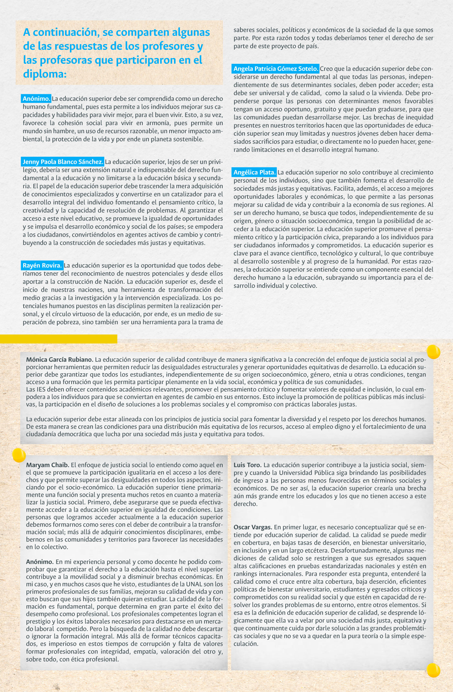

Haz clic en cada capítulo
para profundizar en su contenido


Haz clic sobre el botón para escuchar la introducción del capítulo

Actividad de saberes previos
Basados en los conocimientos previos, se pide responder estas preguntas:
¿Por qué la educación superior ha de ser comprendida como parte del derecho humano fundamental a la educación?
¿Cómo la educación superior de calidad contribuye a la concreción del enfoque de la justicia social?
Esquema del capítulo
A continuación, se detalla la estructura general del capítulo.
Accede a los recursos educativos relacionados a cada tema haciendo clic en los botones.

Lee el capítulo
En el siguiente documento podrás leer el capítulo de “Lo educativo” del libro Docencia universitaria: diálogos entre lo educativo, lo pedagógico, lo curricular y lo didáctico, si deseas tener acceso completo al él, descárgalo en la página de inicio de este recurso.
Haz clic sobre el botón para escuchar la introducción del capítulo
Actividad de saberes previos
Ingresa al siguiente recurso y desarrolla la actividad.

Esquema del capítulo
A continuación, se detalla la estructura general del capítulo.
Accede a los recursos educativos relacionados a cada tema haciendo clic en los botones.
Lee el capítulo
En el siguiente documento podrás leer el capítulo de “Lo pedagógico” del libro Docencia universitaria: diálogos entre lo educativo, lo pedagógico, lo curricular y lo didáctico, si deseas tener acceso completo al él, descárgalo en la página de inicio de este recurso.
Haz clic sobre el botón para escuchar la introducción del capítulo
Esquema del capítulo
A continuación, se detalla la estructura general del capítulo.
Accede a los recursos educativos relacionados a cada tema haciendo clic en los botones.

Lee el capítulo
En el siguiente documento podrás leer el capítulo de “Lo curricular” del libro Docencia universitaria: diálogos entre lo educativo, lo pedagógico, lo curricular y lo didáctico, si deseas tener acceso completo al él, descárgalo en la página de inicio de este recurso.
Haz clic sobre el botón para escuchar la introducción del capítulo
Actividad de saberes previos
A partir de los memes que se presentan a continuación y de sus miradas y experiencias en contextos educativos, le invitamos a expresar su propia definición y comprensión acerca de la didáctica: ¿qué es la didáctica? y ¿para qué sirve la didáctica?
Esquema del capítulo
A continuación, se detalla la estructura general del capítulo.
Accede a los recursos educativos relacionados a cada tema haciendo clic en los botones.
Lee el capítulo
En el siguiente documento podrás leer el capítulo de “Lo didáctico” del libro Docencia universitaria: diálogos entre lo educativo, lo pedagógico, lo curricular y lo didáctico, si deseas tener acceso completo al él, descárgalo en la página de inicio de este recurso.
Reproduce cada video para conocer el testimonio diferentes profesoras y profesores que participaron del proceso de formación del Diplomado de Docencia Universitaria.
Valentina Mejía, Sede Manizales
Nicolás Mora, Sede Bogotá
Rubén Pardo, Sede Bogotá
Leandro Garzón, sede Medellín
Ana Milena Morales, sede Bogotá
Agradecimientos
Valentina Mejía Amézquita
Nicolás Mora Parra
Rubén Darío Pardo Herrera
Diego Leandro Garzón Agudelo
Ana Milena Morales
Universidad Nacional de Colombia